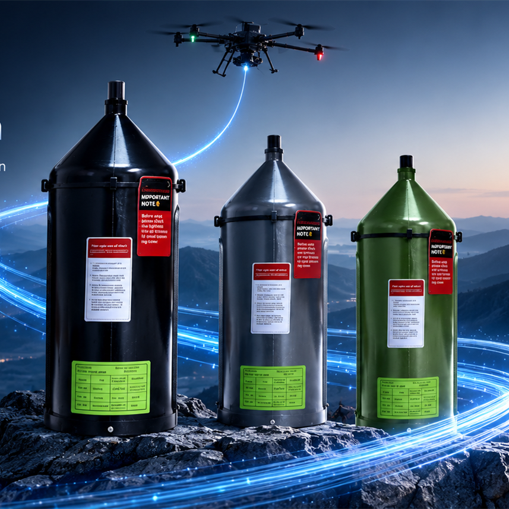

01
Fiber Optic Spools
Compact spool solutions for controlled deployment and organized storage of fiber optic cable.
View product →Fiber optic spools, winding equipment and application-focused solutions designed for stable, lightweight and long-distance data transmission.
From precision winding to finished fiber optic spools, we focus on the components that support reliable tethered transmission.
Compact spool solutions for controlled deployment and organized storage of fiber optic cable.
View product →Production equipment for precision winding, helping manufacturers achieve repeatable spool quality.
View product →Product selection and technical communication for customers building fiber-based tethered systems.
Talk to us →We develop products around the needs of fiber optic transmission and tethered drone applications.

Lightweight and compact spool solutions designed for fiber deployment in tethered applications.
Precision winding equipment for manufacturing fiber optic spools with consistent winding quality.
Our focus is practical manufacturing: stable production processes, consistent product quality and responsive communication with international customers.
We are a technology-focused manufacturer serving customers in fiber optic transmission and tethered drone applications. Our product portfolio combines fiber optic spool solutions with the winding equipment used to manufacture them.
We work with international customers to provide practical product information, technical communication and customized solutions according to application needs.